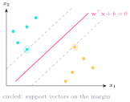

subject to
subject to  ; the solution depends only on the support vectors, and kernels
; the solution depends only on the support vectors, and kernels  give non-linear boundaries — a classifier robust with few training samples and many features, widely used for multispectral and hyperspectral data.
give non-linear boundaries — a classifier robust with few training samples and many features, widely used for multispectral and hyperspectral data.Method
Hard margin: for separable data, the distance from the hyperplane to the closest points of each class (scaled to ) is , so the margin is : maximise it by minimising .
Soft margin: slack allows errors, penalised by  :
:
and are chosen by cross-validation.
Picture

Intuition
Draw the widest possible road between the two classes; only the points on the kerb decide where the road goes.
Pitfall
SVMs are sensitive to feature scaling (the RBF kernel uses distances) and to : unscaled features or untuned parameters give poor maps despite the method's reputation.